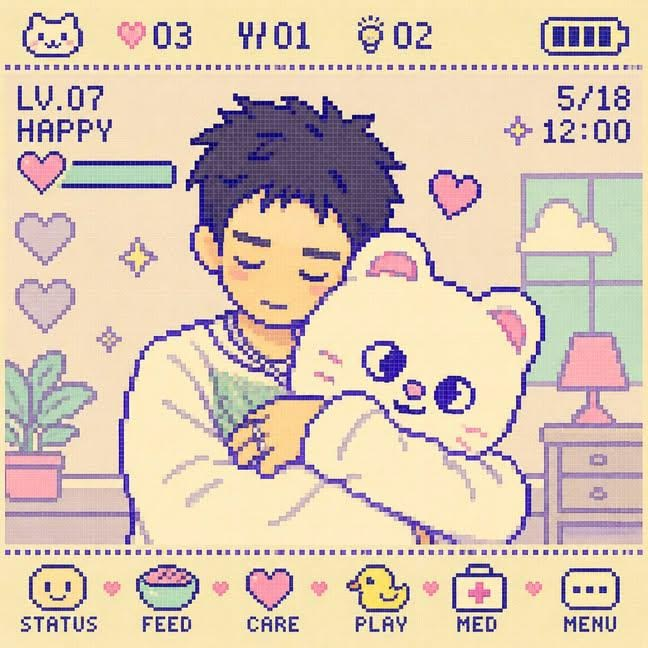
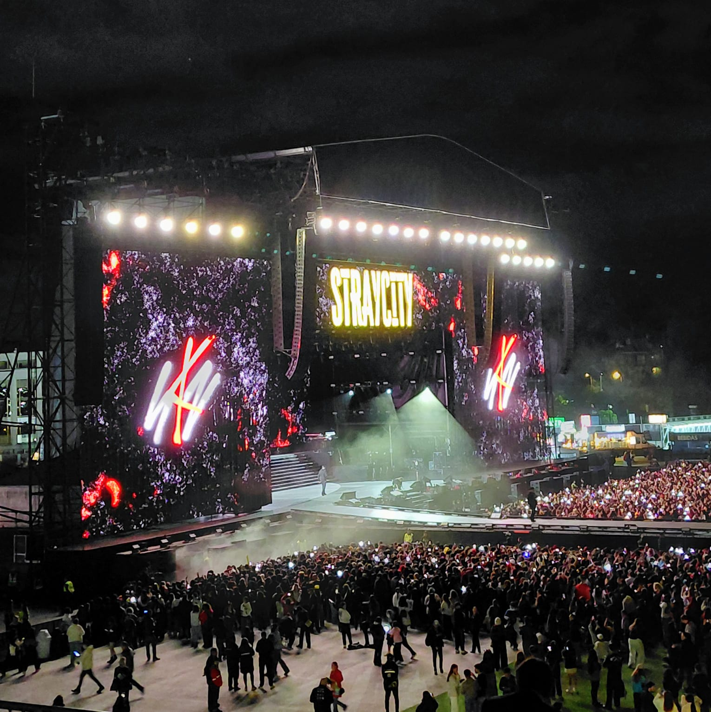
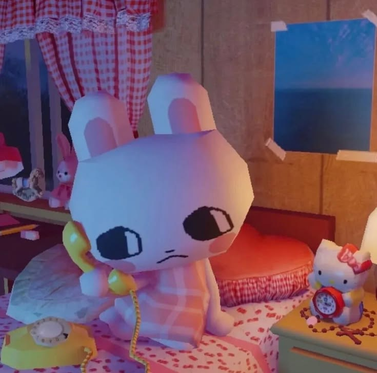
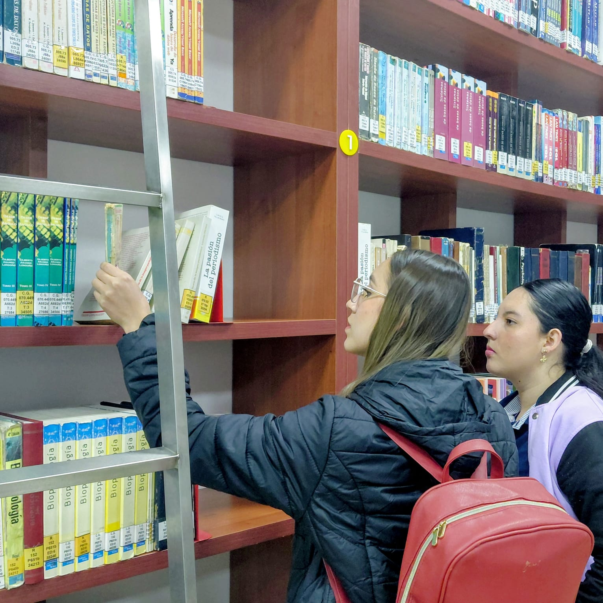
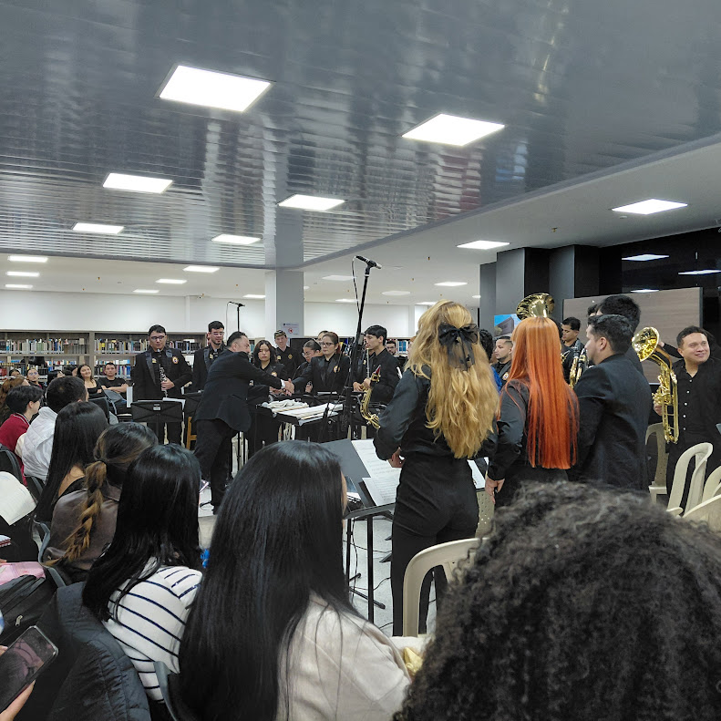
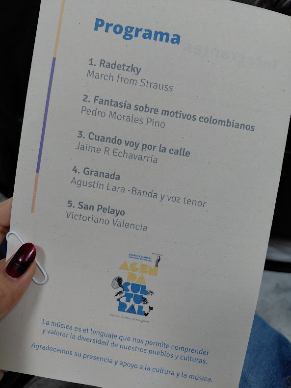
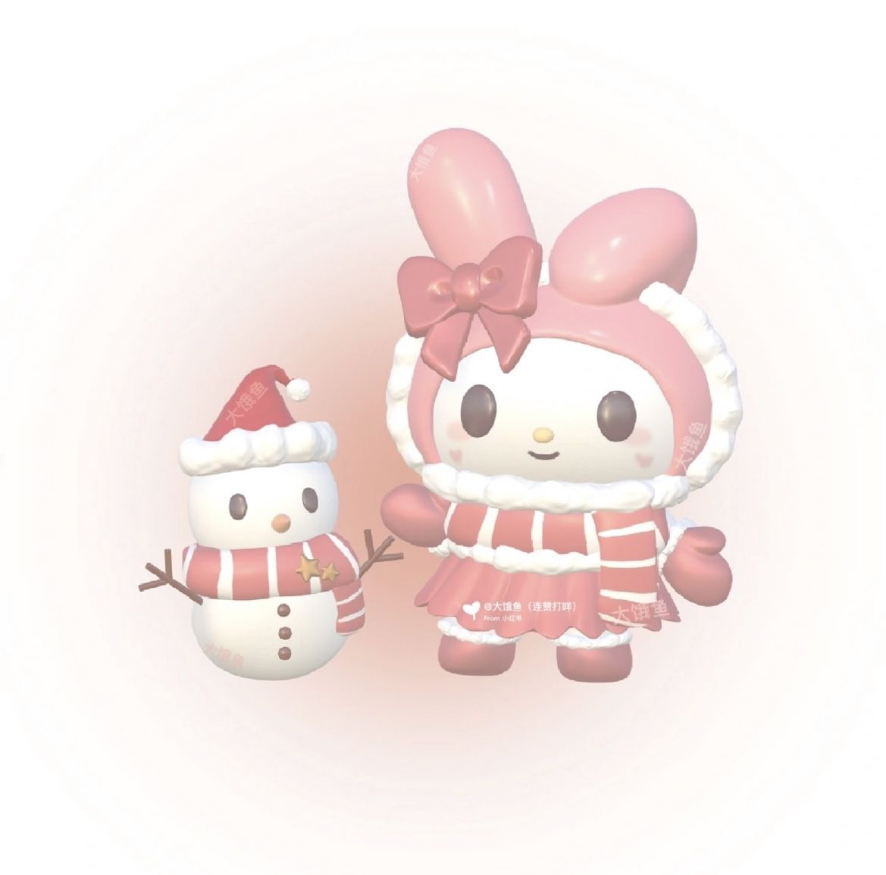

Periodismo electrónico, ciberperiodismo y periodismo digital
¿Cuál es la diferencia?
Ver infografía


Septiembre amarillo
Mes de prevención del suicidio
Leer más
El suicidio es un problema de salud pública que afecta a millones de personas en todo el mundo.
Según la Organización Mundial de la Salud (OMS), más de 700.000 personas mueren por suicidio cada año,
lo que equivale a una persona cada 40 segundos.
En Colombia, el suicidio es la tercera causa
de muerte entre los jóvenes de 15 a 29 años, y la segunda causa entre los hombres de 30 a 44 años.
Por eso, es importante hablar sobre este tema y promover la prevención del suicidio.


El disfrute de los relatos mediáticos
Sobre lo chévere de pertenecer a algo, aunque sea a través de videos
Leer más
Omar Rincón, director del posgrado en televisión de la Universidad Javeriana,
conceptualiza la Comunicación Mediática dentro de un panorama cultural en que se valoran más las
narraciones y afectividades por sobre los contenidos y argumentos.
Es decir que la comunicación
produce, a través de los medios, redes de significado colectivo que produce en los individuos
《una sensación individual de disfrute, de pertenecer y de compartir con los otros...》
-Narrativas mediáticas (2006)

Visita a la biblioteca José Rafael Faría Bermúdez
Sesión de consulta grupal durante el curso, ¡QUÉ LINDO!
Leer más
Durante la jornada tarde del 25 de septiembre del semestre 2026-2, estudiantes de Comunicación Social visitaron la biblioteca José Rafael Faría Bermúdez para realizar una sesión de consultas. Esto con el propósito de nutrir las bases teóricas sobre el periodismo y los medios dentro del curso Periodismo Electrónico.

Fantasía sobre motivos colombianos
Velada cultural en la Biblioteca Rafael Faría Bermúdez
Leer más
La Banda Sinfónica de la Universidad de Pamplona fue protagonista durante la primera noche de octubre,
al ofrecer un repertorio que enriqueció el ambiente académico.
A esto , la maestra brasileña Carol Gama
resalta que "ver al maestro Jaime Chaparro dirigiendo realmente es un espectáculo", y que a su parecer, entre todas las piezas,
San Pelayo por Victoriano Valencia es una de las que mejor retrata la escencia colombiana.


ME BEFORE IU
Mi redacción, luego la de la IA
Leer más
ME - Durante la jornada de los días 14 y 15 de octubre del 2026, la Cámara Colombo-Venezolana y la Gobernación de Norte de Santander organizaron un encuentro que reunió a 46 empresas para impulsar el desarrollo regional. Su agenda incluyó temas de negocios, turismo y relaciones binacionales para impulsar las relaciones económicas con Venezuela.
IA - El Hotel Casino Internacional de Cúcuta acogió el Encuentro Binacional organizado por la Gobernación de Norte de Santander y la Cámara Colombo-Venezolana. El evento reunió a 46 empresas de ambos países en una clave muestra comercial. Su agenda académica abordó negocios, turismo y las relaciones entre Colombia y Venezuela. Asimismo, se analizó el impacto estratégico de la liberación de sanciones comerciales al país vecino. Con este espacio, la región fronteriza da un paso firme hacia la reactivación económica conjunta.

En caso de dejar la U
Cápsula informativa sobre la deserción estudiantil en IES de Colombia
Leer más
Desde el bolsillo se siente diciembre
Cápsula informativa sobre el gasto en festividades navideñas
Leer más¿Cómo están los temas de salud en Pamplona?
Periodismo visual de datos